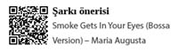

Puro Profesyonelleri
Duman ile statü ve keyfi körükleyen
profesyoneller
Puro; güç, başarı, takdir ve ince zevkler üzerine kurulmuş bir tutku, heyecan ve statü simgesi. Puro, yakılmasından saklanmasına, içilmesinden satın alınmasına kadar çok zengin bir kültüre sahip olduğu için profesyoneller klanında ziyadesiyle ilgi görmektedir.